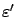
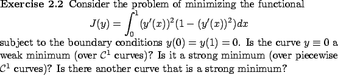

We recall from Section 1.3 that in order to define local optimality, we must first select a norm, and on the space of
 curves
curves
 there are two natural candidates for the
norm: the 0-norm (1.30) and the 1-norm (1.31).
Extrema (minima and maxima) of
there are two natural candidates for the
norm: the 0-norm (1.30) and the 1-norm (1.31).
Extrema (minima and maxima) of  with respect to the 0-norm
are called strong extrema, and those with respect to the 1-norm are called weak extrema.
with respect to the 0-norm
are called strong extrema, and those with respect to the 1-norm are called weak extrema.
These two notions will be central to our subsequent developments, and so it is useful to reflect on them for a little while until the distinction between the two types of extrema becomes clear and there is no possibility of confusing them. If a
 curve
curve  is a strong extremum, then it is automatically a weak one, but the converse is not true.
The reason is that an
is a strong extremum, then it is automatically a weak one, but the converse is not true.
The reason is that an
 -ball around
-ball around  with respect to the 0-norm
contains the
with respect to the 0-norm
contains the
 -ball with respect to the 1-norm for the same
-ball with respect to the 1-norm for the same
 , as is clear from the norm definitions; on the other hand, the
, as is clear from the norm definitions; on the other hand, the
 -ball with respect to the 1-norm does not contain the
-ball with respect to the 1-norm does not contain the

-ball with respect to the 0-norm for any , no matter how small. In other words, it is harder to satisfy
On the other hand, it will become evident later that the concept of
a weak minimum is not very suitable in optimal control. Indeed, an optimal trajectory  should give a lower cost than all nearby trajectories
should give a lower cost than all nearby trajectories  , and there is no compelling reason to take into account the difference between the derivatives of
, and there is no compelling reason to take into account the difference between the derivatives of  and
and  .
Also, as we already mentioned, requiring
.
Also, as we already mentioned, requiring  to be a
to be a
 curve is often
too restrictive. Specifically, we will want to allow curves
curve is often
too restrictive. Specifically, we will want to allow curves  which are
continuous everywhere on
which are
continuous everywhere on  and whose derivative
and whose derivative  exists everywhere
except possibly a finite number of points in
exists everywhere
except possibly a finite number of points in  and is continuous
and bounded between these points. Let us agree to call such curves
piecewise
and is continuous
and bounded between these points. Let us agree to call such curves
piecewise
 , to reflect the fact that they are
concatenations of finitely many
, to reflect the fact that they are
concatenations of finitely many
 pieces.
(We could define the class of admissible curves more precisely using
the notion of an absolutely continuous function; we will revisit this
issue in Section 3.3 as we make the transition to optimal control.) If we use the 0-norm, then it makes no difference whether
pieces.
(We could define the class of admissible curves more precisely using
the notion of an absolutely continuous function; we will revisit this
issue in Section 3.3 as we make the transition to optimal control.) If we use the 0-norm, then it makes no difference whether  is
is
 or piecewise
or piecewise
 or just
or just
 ; this is another
advantage of the 0-norm over the 1-norm.
; this is another
advantage of the 0-norm over the 1-norm.
In view of the above remarks, it seems natural to first obtain some basic tools for studying weak minima and then proceed to develop more advanced tools for investigating strong minima. This is essentially what we will do. The next example illustrates some of the points that we just made regarding the 0-norm versus the 1-norm. The exercise that follows should help the reader to better grasp the concepts of weak and strong minima; it is to be solved using only the definitions.
